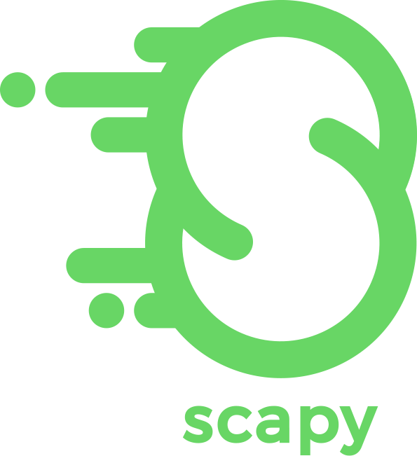

Logique métier et Interface Graphique Moderne.

Forge et décodage de paquets (ARP, ICMP).

Persistance orientée Graphe (Cypher Query Language).
Gestion de versions et travail collaboratif.

Il synthétise les interactions principales :
Permet des requêtes complexes comme :
MATCH (d:Device)-[:DETECTED]->(s:Scan) WHERE s.date > '2023-01-01' RETURN d